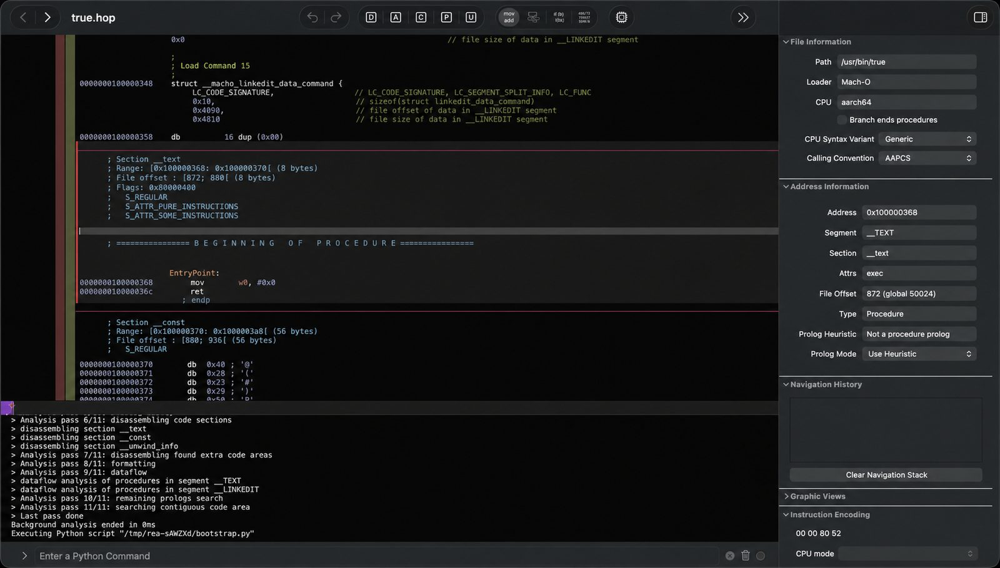
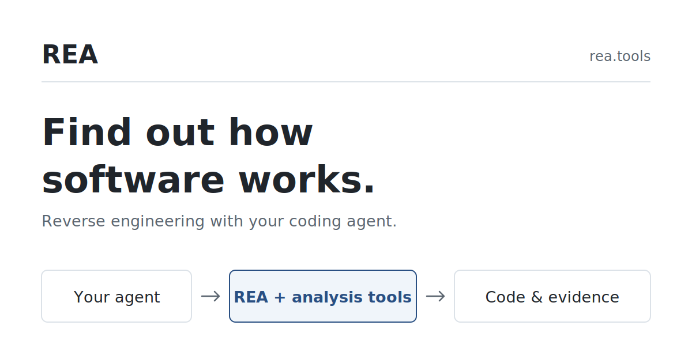

1. REA — Reverse Engineer Anything
畀 coding agent 檢查程式點樣運作，由應用行為去到原生二進位。
npm rea-agents 6.8.0
MIT

docs/assets/rea-hopper-analysis.png
功能
- 一組 MCP，畀 agent 逆向分析原生執行檔／函式庫、JavaScript 同 Electron 應用、.NET assemblies，以及網站同執行期行為。
- 分析喺本機執行；回傳結果會帶證據，同埋每項結論的限制。
- 原生分析可用已安裝的 Hopper、Ghidra、IDA 或 Kuna；安裝過程可在你批准後選裝 Hopper。靜態 JavaScript 分析唔需要原生分析引擎。
- 同一套工作流程亦可用命令列。官網示範包括由錄製的 web app session 建立 RL 訓練環境。
- 需要 Node.js 22.x（≥22.23.4）、24.x（≥24.22.1）或 26.12.1+，以及 npm。
用法
已有 Node.js 同 npm 時，喺終端機執行（或將以下指示交俾你嘅 coding agent）：
npx rea-agents@latest setup- 選擇 client（官方列出包括 Claude Code、Codex、Cursor、Gemini CLI、Grok Build 及其他）、預覽計劃、批准後重啟 agent。Setup 會登記 REA 的 MCP server 同對應工作流程，並備份現有設定。
- 之後可以直接問 agent，例如檢查某個 app 的一項功能、出示證據，再喺你自己的專案實作類似能力。
- 命令列示例（分析已解出的 JavaScript／Electron 目錄或 ASAR）：
npx -y rea-agents@latest analyze-javascript-application /absolute/path/to/app --json - 長期使用可
npm install --global rea-agents，之後用rea update更新。 - 只應由官方來源取得：morluto/rea、rea.tools、或 npm 套件
rea-agents。分析第三方軟體時仍須遵守授權同適用法律。
參考
- GitHub：https://github.com/morluto/rea
- 官網：https://rea.tools/ · 指南 /guides · 案例 /showcase
- 文件站：https://morluto.github.io/rea/ · 安裝 get-started
- npm：rea-agents
最新研究（2026-11-12）
- 今日從 npm registry 核實
rea-agents最新版為 6.8.0。官網案例文案仍提到「Inspected with REA 4.1.0」，那是該 Calculator 示範當時用的版本，唔等於而家套件版號。 - 官方警告：名稱相近的 repo 或複製嘅 README 唔等於官方下載來源。